Chapter 3 - Description of TraceX
This chapter describes the overall functionality of the TraceX system analysis tool, including the overall functionality of its GUI.
Display Overview
Figure 4 shows the main display window of the TraceX system analysis tool. The layout is straightforward—the execution contexts are represented by the vertical elements on the left side; e.g., initialization, interrupt, idle, and the various thread entries. The events that take place in each context are displayed horizontally on the same context line. For example, the QR events shown below show that thread 2 is making successive calls to tx_queue_receive.
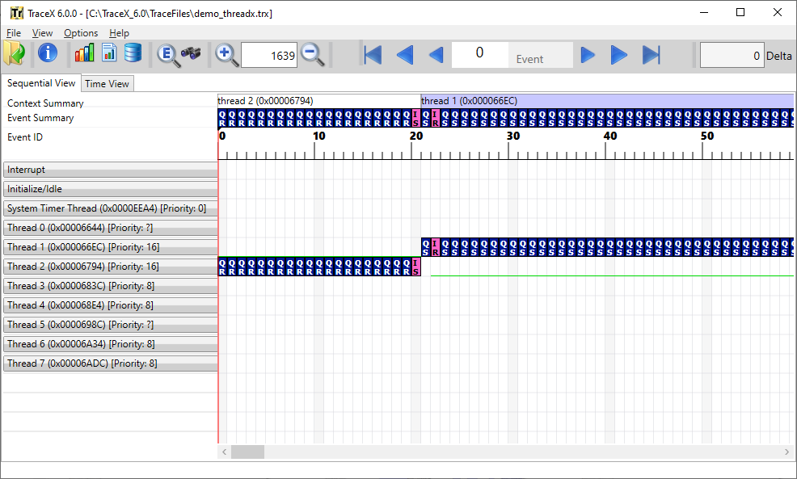
FIGURE 5
Context changes are represented by the vertical black lines that connect the context lines. The currently selected event is represented by a solid red vertical line. In this example, event 494 is selected.
Title Bar
The TraceX title bar provides several pieces of useful information. First is the current version of TraceX. Second is the full path of the currently opened trace file. The example in Figure 6 shows TraceX version 6.0.0 is displaying the demo_threadx.trx trace file.
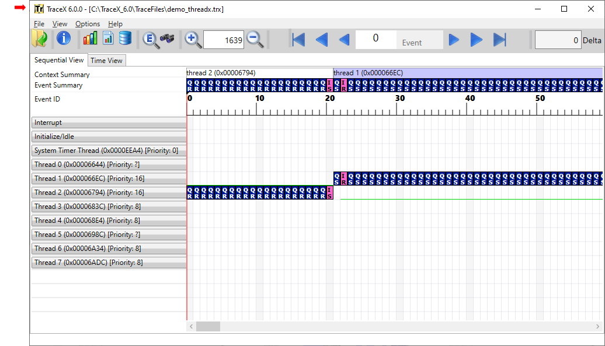
FIGURE 6
Tool Bar
The TraceX tool bar provides several buttons to open trace files and control elements of their display.
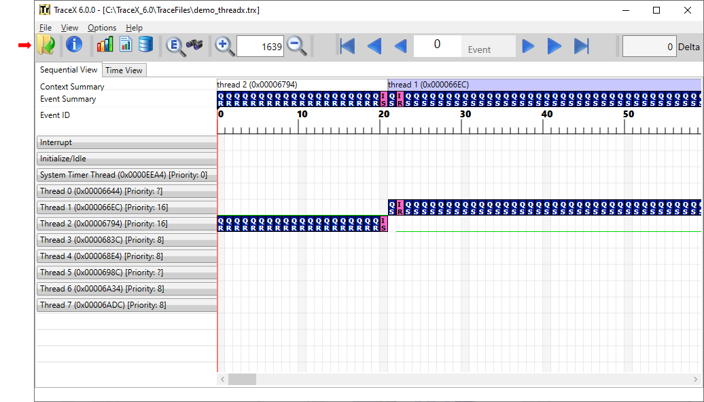
FIGURE 7
The TraceX tool bar buttons—from left to right—are defined as follows:
| Button | Function |
|---|---|
Open a trace file |
|
Open this User Guide |
|
Generate execution profile |
|
Generate performance statistics |
|
Generate Thread Stack usage |
|
Display currently selected event |
|
Search for events |
|
Zoom in. |
|
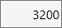 |
Select percentage of display zoom, where 100% means the entire trace file is displayed within the current view. |
Zoom out. |
|
Select first event. |
|
Display previous event page. |
|
Display previous event. |
|
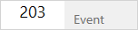 |
Determine how the next/previous navigation buttons operate. If Event is selected, navigation is done on the next/previous event. If Context is selected, navigation is done on the next/previous event on the specified context. If Object is selected, navigation is done on the next/previous event of the specified object; e.g., events associated with a specific queue. If Switches is selected, navigation is done on the next/previous change in context. If ID is selected, navigation is done on the next/previous event of the specified event ID. |
Display next event. |
|
Display next event page. |
|
Select last event. |
Display Mode Tabs
TraceX displays system events in two different ways: sequential and time relative. The default mode is sequential and that is the mode shown in Figure 8.
Changing the mode is as simple as selecting the Sequential View or Time View tabs in the TraceX window. Figure 8 shows the Sequential View and Time View tabs.
FIGURE 8
Sequential View Mode
The sequential view mode is selected by the Sequential View tab shown in Figure 8. This is the default mode. In this mode, events are shown im../mediately following each other, regardless of the elapsed time between them. Note also the ruler above the display area in Figure 8. It shows the relative event number from the beginning of the trace.
This mode is the default mode and is useful in getting a good overview of what is going on in the system.
Time View Mode
The time view mode is selected by the Time View button. Figure 9 shows the same event trace as Figure 8 except in time view mode. In this mode, events are shown in a time relative manner, with the solid green bar being used to show execution between events. This mode is useful to see where the bulk of processing is taking place in the system, which can help developers tune their system for greater performance and/or responsiveness.
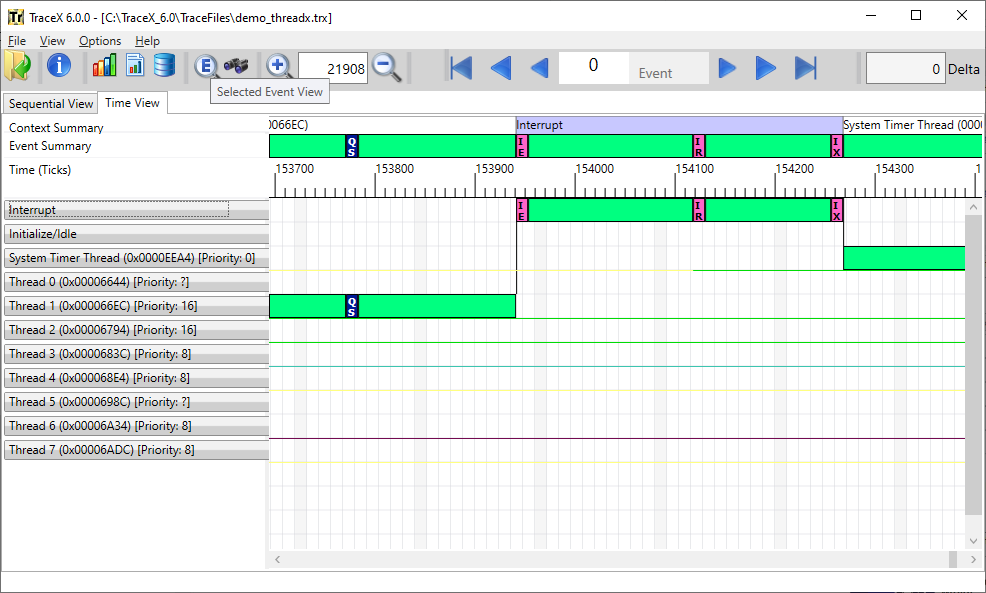
FIGURE 9
Note also the ruler above the event display in Figure 9. This ruler shows relative ticks from the beginning of the trace, as derived from the time stamp instrumented in the event trace logging inside of ThreadX. If the time stamps are too close (low frequency timer), the events will run together. Conversely, if the time stamps are too far apart (high frequency timer), then the events will be too far apart. Choosing the right frequency time stamp is an important consideration in making the time relative view meaningful.
System Summary Line
TraceX also provides a single summary line (the top context in Figure 10) that includes all events on the same line. This makes it easy to see an overview of a complex system. The summary bar is especially beneficial in systems that have many threads. Without such a summary line, you would have to follow complex system interactions using the vertical scroll bar to follow the context of execution.
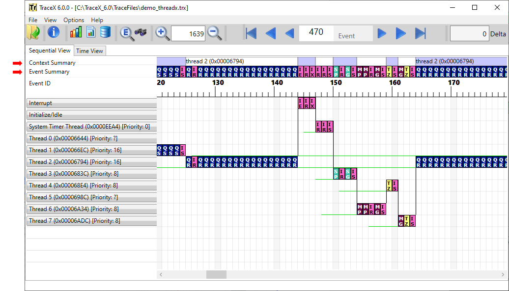
FIGURE 10
The summary line contains a summary of the context as well as the corresponding event summary underneath. In the example shown in Figure 10, it is easy to see that thread 2 is executing and interrupted. The interrupt results in preemption by thread 3, thread 6, thread 4, and thread 7, after which thread 2 resumes execution.
System Contexts
TraceX lists the system contexts on the left-hand side of the display, as shown in Figure 11. Events that occur in a particular context are displayed on the horizontal line to the right of that context. In this way, you can easily ascertain which context the event occurred as well as follow that context line to see all the events that occurred in a particular context.
The first tow context entries are always the Interrupt and Initialize/Idle contexts. Interrupt context represents all system events made from Interrupt Service Routines (IRS). Initialize/Idle context represents two contexts in ThreadX. Events that occur during tx_application_define, are Initialize/Idle context. If the system is idle and thus no events are occurring, the green bar representing Running in the time view is drawn on the Initialize/Idle context.
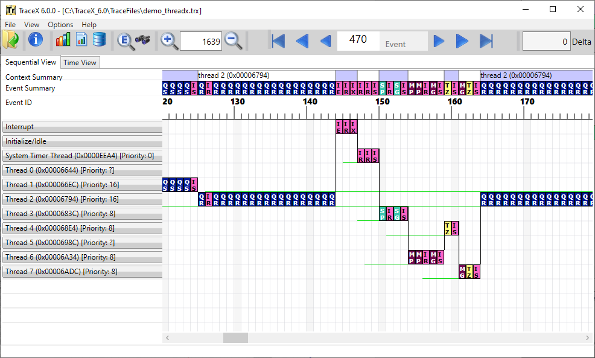
FIGURE 11
In the example in Figure 11, there are nine thread contexts, starting from the System Timer Thread context. Additional information about an individual context is available by placing the mouse on that context. The additional information includes the thread’s starting stack address, ending stack address, total size, percent used, relative execution percentage, number of suspension, resumptions, and its highest and lowest priority during the trace. Figure 12 shows information for thread 0.
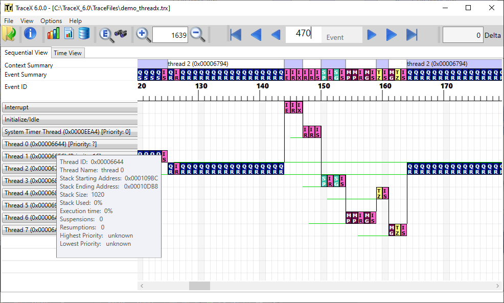
FIGURE 12
Contexts may also be moved to group those of greater interest. This is accomplished by dragging and dropping the context or right-clicking on the context. Right-clicking on the context yields a dialog for moving the context to the top or the bottom.
Selecting Move to top results in the thread 3 context being moved to the top of the context list, as shown in Figure 13.
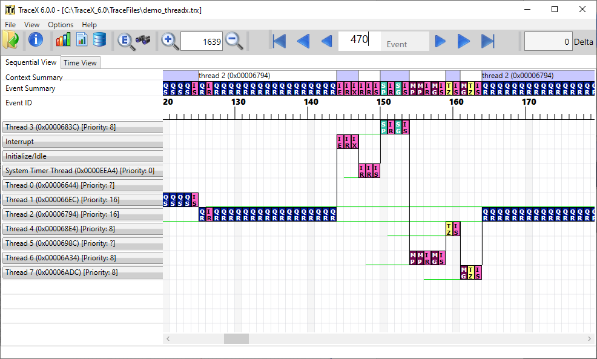
FIGURE 13
Thread Status Information
When enabled, TraceX displays the status of each thread via a colored line on the thread’s context. A green line indicates that the thread is in a "ready" state, while a line of any other color indicates the thread is suspended. For suspended threads, the color of the line indicates the type of ThreadX object that the thread is suspended on. For example, in Figure 13 the green line on the System Timer Thread’s context starting at event 147 shows that the System Timer Thread is ready. Prior to event 147 and after event 154, the absence of the green line indicates that the System Timer Thread is ready. Prior to event 147 and after event 154, the absence of the green line indicates that the System Timer Thread is suspended.
FIGURE 14
There are three modes of thread status display, available via the Options -> Status Lines menu. The Ready Only option only shows the ready (green) status lines, but does not display any suspension status lines. This is the default option for TraceX. The All On option enables the display of all status lines (ready and suspension).
Finally, the All Off option disables the display of all status lines.
Event Information Display
TraceX provides detailed information on some 600 run-time events, including ThreadX, FileX, NetX Duo, and USBX API calls and internal events. TraceX also supports up to an additional 61,439 unique user-defined events.
Regardless of whether sequential or time display mode is selected, a mouse-over on any event in the display area results in detailed event information displayed near the event. The mouse-over of event 143 in the demonstration demo_threadx.trx trace file is shown in Figure 15:
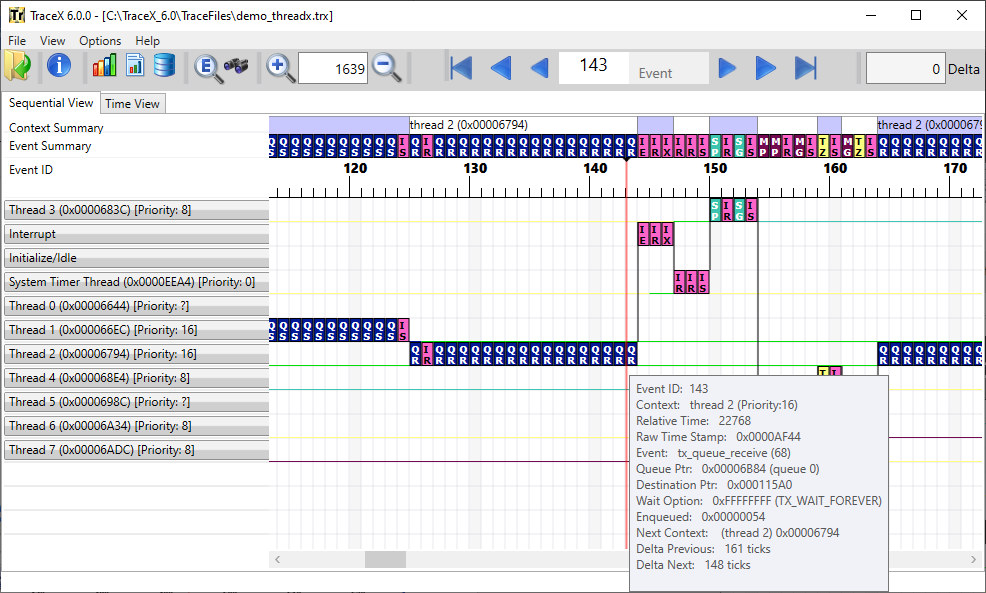
FIGURE 15
Each event displayed contains standard information about Context and both the Relative Time and Time Stamp. The Context field shows what context the event took place in. There are exactly four contexts: thread, idle, ISR, and initialization. When an event takes place in a thread context, the thread name and its priority at that time is gathered and displayed as shown above. The Relative Time shows the relative number of timer ticks from the beginning of the trace. The Raw Time Stamp displays the raw time source of the event. Finally, all event-specific information is displayed. This information is detailed throughout the remainder of this chapter.
Detailed event information is also available by double clicking on any event. Double clicking on event 143 is shown in Figure 16:
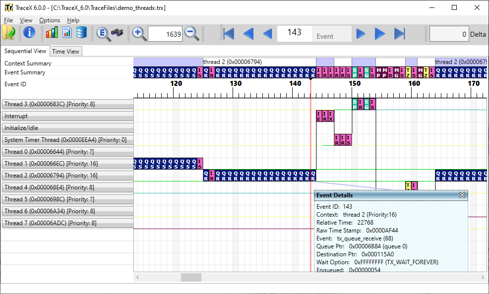
FIGURE 16
Being able to view multiple events at once gives the user a much richer view of what happened. Seeing them side by side is quite useful since many events are interrelated. This is accomplished by double clicking on multiple events.
Current Event Display
TraceX displays the current event—in a separate window—when selected by the user via View -> Current Event or clicking on the current event button on the toolbar. After selected, TraceX displays the currently selected event in a stand-alone window and refreshes this window whenever another event is selected.
Event Searching
TraceX provides an extensive event search capability. The event ID and information fields of each event are the primary search parameters. Not specifying a value for a search parameter indicates that parameter effectively removes that parameter from of the search. In addition, the search can be done such that any parameter found will satisfy the search or all parameters must be found to satisfy the search. The search may also be restricted to a particular context or cover all contexts in the trace. Invoking the event search is done by selecting the Search by Value button on the toolbar, as shown in Figure 17. When selected the search dialog is displayed, which specifies all the parameters for the search. The Next and Previous buttons in the search dialog can then be used to find the next and previous events that match the specified search criteria. Figure 17 shows the search dialog.
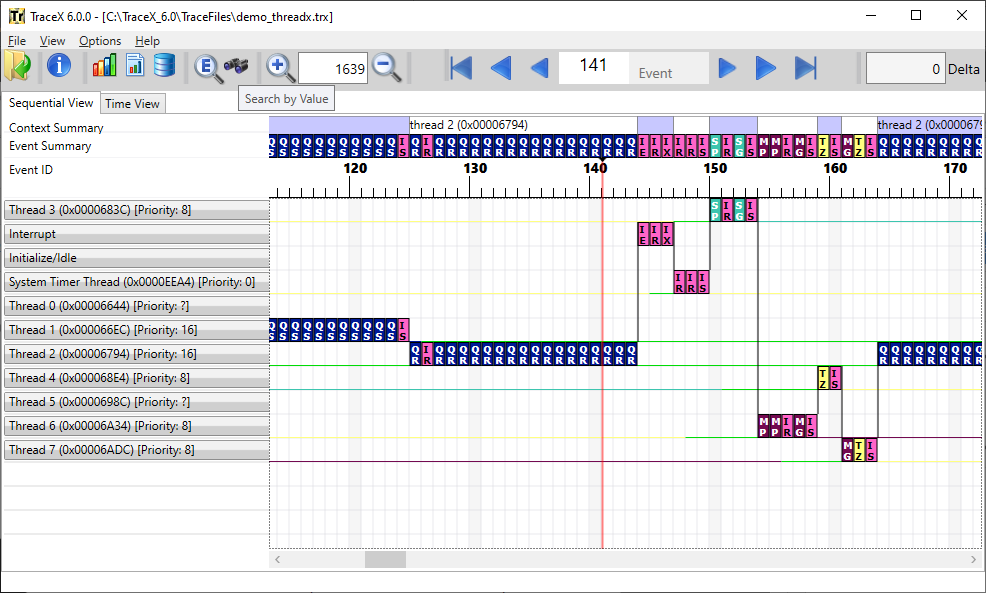
FIGURE 17
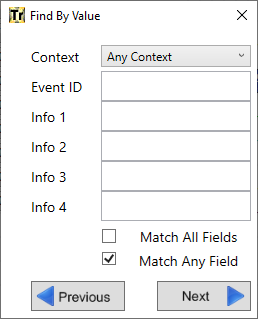
FIGURE 18
Zooming In and Out
By default, TraceX displays the events at their full size. You may zoom in or zoom out as desired. Zooming out is useful to see the overall events captured in the trace, while zooming in is useful in conditions where the events overlap because of the resolution of the time stamp source. Figure 19 shows the demo_threadx.trx file zoomed out so that 100% of the trace file is shown.
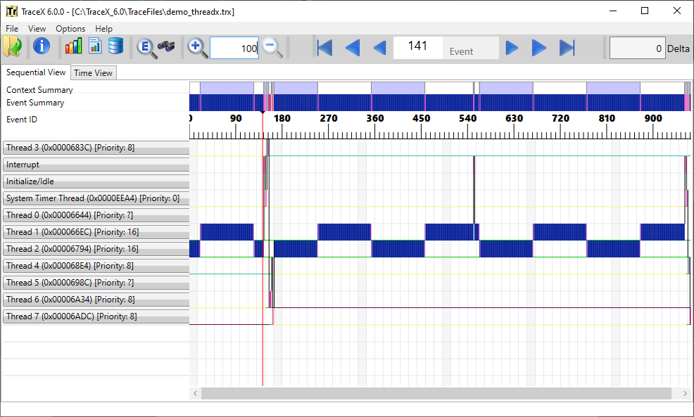
FIGURE 19
When zoomed out at 100% to show the entire trace within the current display page, it is easy to see all the context execution captured in the trace as well as the general events occurring within those contexts. Notice in Figure 16 that thread 1 and thread 2 execute most often. The blue coloring for their events also suggests that these threads are making queue service calls (queue events are blue in color).
Restoring to a full icon view is equally easy; Either the zoom-in button may be selected repeatedly or some factor of 100 may be entered.
Delta Ticks Between Events
Determining the number of ticks between various events in TraceX is easy—click on the starting event and drag the mouse to the ending event. The delta number of ticks between the events shows up in the upper right-hand corner of the display, as shown in Figure 17.
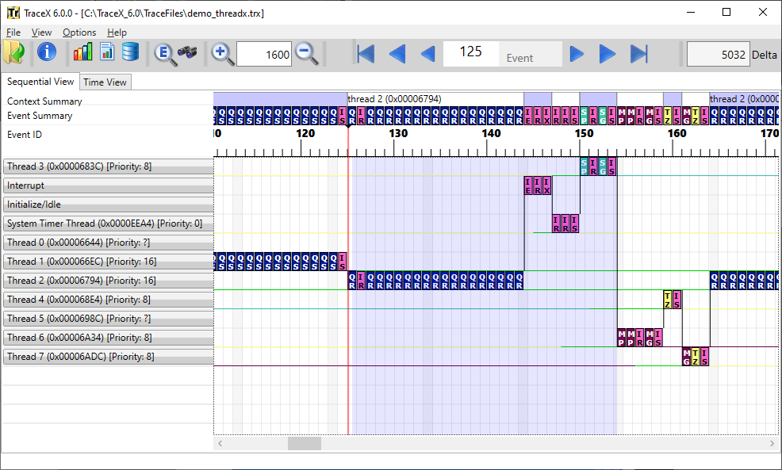
FIGURE 17
The delta ticks shown in Figure 17 show that 5032 ticks have elapsed between event 125 and event 154. This could also be calculated manually by looking at the relative time stamps in each event and subtracting, but using the GUI is easy and instantaneous.
Actual Time Display
When enabled, TraceX displays the actual time in microseconds in Time View and for the various delta time information displayed by TraceX. By default, the actual time display is disabled. To enable the actual time display, the number of ticks per microsecond must be entered via the Options -> Ticks per Microsecond menu selection (the value to enter is determined by the hardware timer source used for the TraceX event logging on the target).
Priority Inversions
TraceX automatically displays priority inversions detected in the trace file. Priority inversions are defined as conditions where a higher-priority thread is blocked trying to obtain a mutex that is currently owned by a lower-priority thread. This condition is termed deterministic, because the system was set up to operate in this manner. To inform the user, TraceX shows deterministic priority inversion ranges as a light salmon color.
TraceX also displays non-deterministic priority inversions. These priority inversions differ from the deterministic priority inversions in that another thread of a different priority level has executed in the middle of what was a deterministic priority inversion, thereby making the time within the priority inversion somewhat non-deterministic. This condition is often unknown to the user and can be very serious. In order to alert the user of this condition, TraceX shows non-deterministic priority inversions as a brighter salmon color. Figure 18 shows both deterministic and non-deterministic priority inversions.
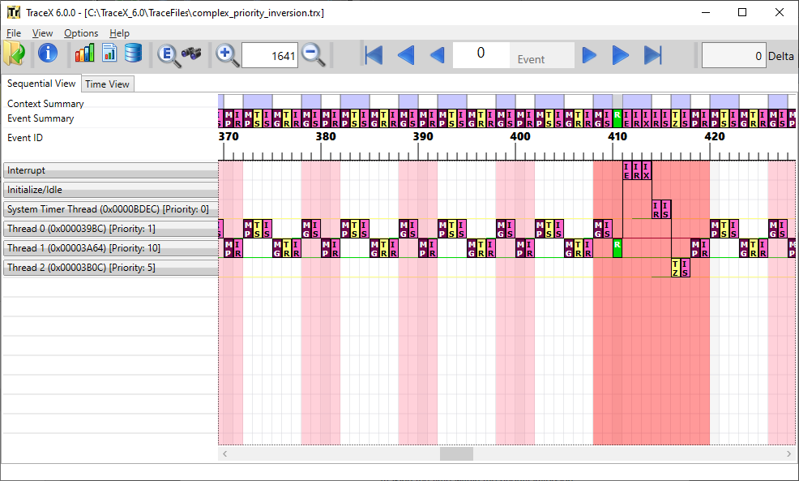
FIGURE 18
Figure 18 shows a deterministic priority inversion from event 398 through event 402. In this range, the higher-priority thread 0 blocks on a mutex owned by a lower-priority thread 1. At event 402, thread 1 releases the mutex and thus ends the priority inversion.
The brighter shaded area shows a non-deterministic priority inversion between event 408 through event 420. What makes this non-deterministic is that while thread 1 holds the mutex that higher-priority thread 0 is blocked on, an interrupt occurs that resumes thread 2, which then executes and lengthens the time the system is in priority inversion. This condition can be quite serious and difficult to identify; however, with TraceX it is easily identified.